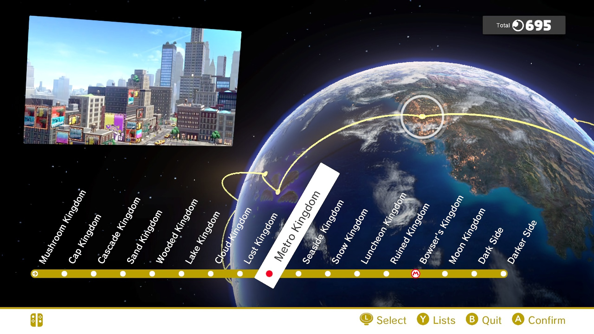

Dive into the basics of Speedrunning and Super Mario Odyssey Speedrunning!
What is Speedrunning?
Speedrunning is a way of playing video games where players try to complete a game or specific goal as fast as possible, often using precise movement, routing, and sometimes intentional glitches to shave off seconds.
It has become popular because it turns single‑player games into competitive races, thrives on livestreaming and community leaderboards, and gives old games fresh life as players collaborate to discover new time‑saving strategies.
Super Mario Odyssey was released on October 27, 2017, which is the day runners first began attempting to “speedrun” the game from start to finish. It has since become one of the most popular games to speedrun in the world!
Why is Speedrunning Super Mario Odyssey so popular?
Super Mario Odyssey speedrunning is especially popular because it combines a beloved, long‑running Nintendo franchise with incredibly expressive movement and open‑ended level design.
Players can chain techniques like rolling, dive jumps, and advanced cap throws to cross huge gaps, skip intended platforms, and improvise stylish routes that feel almost like freestyle parkour.
The game’s open worlds allow many different paths between objectives, so runners can constantly refine new routes and categories instead of being locked into a single “correct” way to play.
On top of that, Mario’s broad appeal and the game’s vibrant visuals make runs fun to watch on streams and at marathons, which keeps a large, active community discovering new tricks and pushing times lower year after year.
In the most popular Super Mario Odyssey speedrun category, Any%, the goal is simple: reach and defeat Bowser on the moon as fast as possible,
with no requirement to fully complete the game. In the story, Bowser kidnaps Princess Peach and travels across the globe collecting lavish wedding items, like a dress, a ring, and a cake, to force a grand wedding with her.
Mario teams up with Cappy and chases Bowser from kingdom to kingdom, eventually confronting him in a final showdown on the Moon Kingdom.
Progress through the game is tied to collecting Power Moons, and a minimum of 124 are required to fuel the Odyssey airship enough to reach the final battle.
In Any%, runners grab only the fastest, most efficient moons and skip as much story content as possible, turning a globe‑trotting adventure into a tightly optimized race straight to Bowser on the moon.
Here's a brief rundown (in order) of a speedrunner's journey through the various kingdoms of the game!

Cap Kingdom
Locals: Bonneters
Bowser's objective: Kidnap Tiara, the princess of the Bonnetons, as Princess Peach's wedding crown
Number of Moons collected: 0 (0/124)
Major Bosses: Topper (Broodal)
Cascade Kingdom
Locals: Unknown
Mario's objective: Acquire and repair an airship to chase down Bowser!
Number of Moons collected: 5 (5/124)
Major Bosses: Madame Broode and Chain Chompikins
Sand Kingdom
Locals: Tostarenans
Bowser's objective: Steal the Tostarenan's Binding Band, a special ring.
Number of Moons collected: 16 (21/124)
Major Bosses: Hariet (Broodal)*, Knucklotec*
Lake Kingdom
Locals: Lochladies
Bowser's objective: Steal the Lochlady dress for Peach to wear at the wedding.
Number of Moons collected: 8 (29/124)
Major Bosses: Rango (Broodal)*
Wooded Kingdom
Locals: Steam Gardeners
Bowser's objective: Steal the Soirée Bouquet, made of special flowers found only in the Wooded Kingdom.
Number of Moons collected: 16 (45/124)
Major Bosses: Spewart (Broodal)*, Torkdrift*
Cloud Kingdom
Locals: Unknown
Mario's objective: Defeat Bowser in a battle upon the clouds.
Number of Moons collected: 0 (45/124)
Major Bosses: Bowser
Lost Kingdom
Locals: Unknown
Mario's objective: Repair the Odyssey and continue the chase after Bowser.
Number of Moons collected: 10 (55/124)
Major Bosses: None
Metro Kingdom
Locals: New Donkers
Bowser's objective: Steal the City's power, publicize his wedding, and distract Mario.
Number of Moons collected: 20 (75/124)
Major Bosses: Mechawiggler
Snow Kingdom
Locals: Shiverians
Bowser's objective: Acquire the legendary Frost-Frosted Cake for his wedding.
Number of Moons collected: 10 (85/124)
Major Bosses: Rango (Broodal)*
Seaside Kingdom
Locals: Bubblianians
Bowser's objective: Steal the Sparkle Water as his wedding's beverage.
Number of Moons collected: 10 (95/124)
Major Bosses: Mollusque-Lanceur*
Luncheon Kingdom
Locals: Volbonans
Bowser's objective: Steal the wedding ring, made of the purest metal found in the Luncheon Kingdom
Number of Moons collected: 18 (113/124)
Major Bosses: Spewart (Broodal)*, Cookatiel*
Ruined Kingdom
Locals: Unknown
Mario's objective: Defeat the Ruined Dragon and repair the Odyssey
Number of Moons collected: 3 (116/124)
Major Bosses: Ruined Dragon
Bowser's Kingdom
Locals: Stairface Ogres
Mario's objective: Catch up to Bowser in his own Kingdom.
Number of Moons collected: 8 (124/124)
Major Bosses: Topper (Broodal), Hariet (Broodal), RoboBrood
Moon Kingdom
Locals: Rabbitish?
Mario's objective: Crash the wedding, then confront and defeat Bowser to rescue Princess Peach!
Number of Moons collected: 0 (124/124)
Major Bosses: Madame Brood and Chain Chompikins*, Bowser (Final Battle)
*Top speedrunners skip/avoid these bosses
Wanna get started with the basics of speedrunning SMO? Watch one of these videos to learn the basics!
How does Super Mario Odyssey hold up against other Nintendo Switch games? Here's a sales comparison chart!